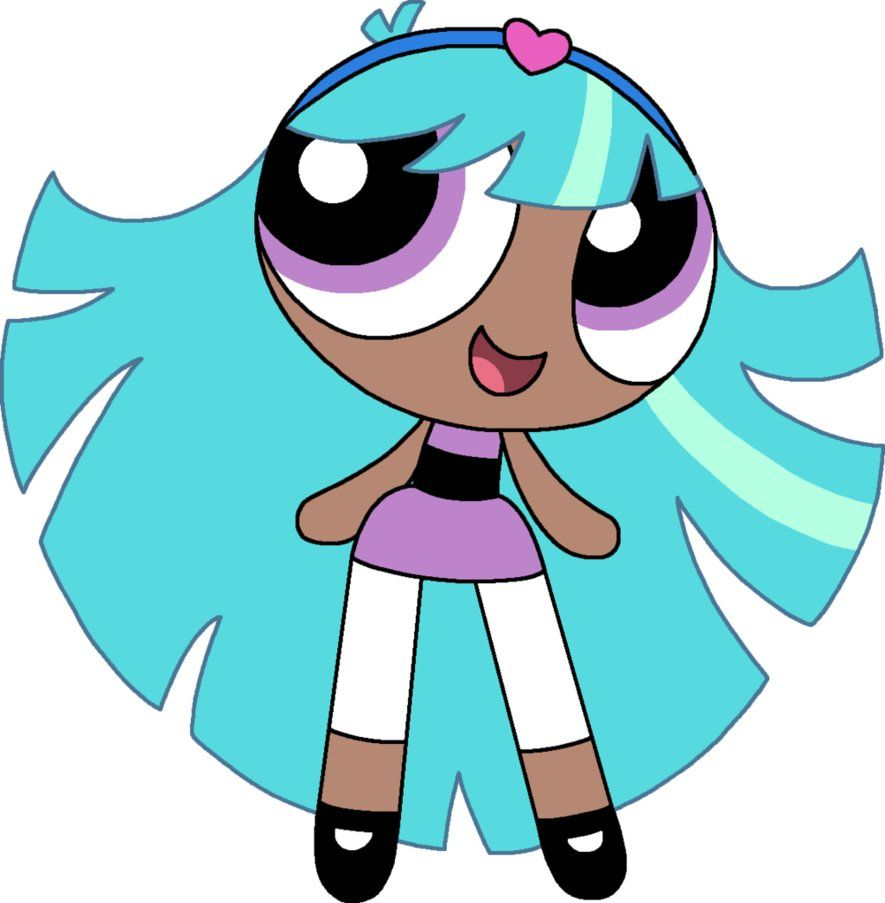

-

Sziporka (Blossom)
A rózsaszín szemű, rózsaszín ruhájú, vörös hajú, piros masnit viselő kislány. Tulajdonképpen ő a csapat vezetője. Általában ő veszi fel a forródrótós játéktelefont, amin a Bogármester hívja fel őket vészhelyzet esetén. Sokszor neki jutnak az eszébe a jó ötletek és a nagy tervek. A túlzott okoskodása miatt szokták bántani.
-

Puszedli (Bubbles)
Világoskék ruhájú, világoskék szemű, szőke hajú kislány. Plüssállatai közül kedvence Okti, a lila polip, aki sok epizódban feltűnik. Szeret csinos lenni.
-

Csuporka (Buttercup)
A pandúrok legerősebb tagja a világoszöld szemű, világoszöld ruhájú, fekete hajú kislány. Teljes ellentéte Puszedlinek: harcias, nem kedveli a kislányos dolgokat, szeret verekedni.
-

Pukkancs (Bliss)
A pletykák igazak! Létezik egy negyedik pindúr pandúr! Kékesfehér szemű, szürke ruhájú, kék masnit viselő kislány. Egyesek szerint őt Mohó Jojó teremtette. Ennek ellenére elsőre kedvesnek tűnik. Csak akkor lesz mérges, ha sokat bosszantják vagy piszkálják. Átvéve Csuporka helyét, a legerősebb pindúr pandúr. Ő nem él együtt a többiekkel.